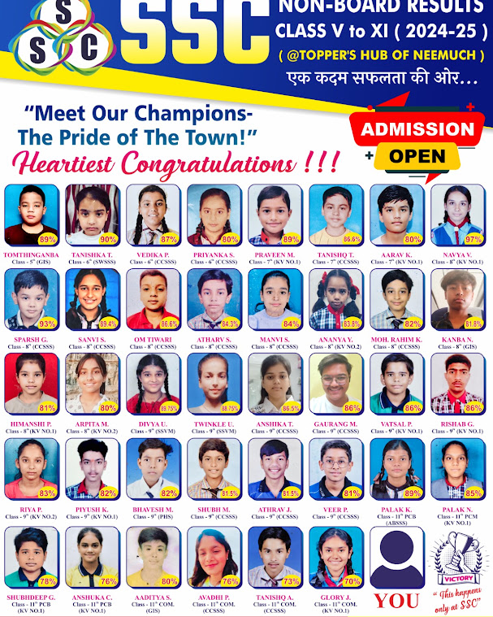

Neemuch Chawni, Madhya Pradesh · "Topper's Hub of Neemuch"
Empowering students with expert guidance, structured learning, and a supportive environment to achieve academic excellence — one focused batch at a time.
एक कदम सफलता की ओर...
4.9★
Google Rating
573+
Google Reviews
1000+
Students Trained
95%+
Success Rate
Why Families Choose SSC
SSC began with a simple observation: students in Neemuch didn't need more coaching seats — they needed more attention per seat. Every batch is kept small enough that a teacher can actually notice when a concept hasn't landed, and correct course before a test exposes it.
Vision
To make disciplined, concept-first learning accessible to every serious student in Neemuch, without needing to relocate to a coaching hub.
Mission
Pair experienced faculty with weekly testing and honest progress reporting, so effort and results stay visibly connected.
Small Batch Learning
Batch sizes are capped deliberately — enough for healthy peer competition, small enough that no one goes unnoticed.
Student Growth
Progress is tracked test-by-test, not just at year-end — so a dip gets addressed in weeks, not missed entirely.
Courses & Programmes
Every course below runs in small batches, with weekly tests built into the schedule from day one.
What's Different Here
Individual Attention
Batch sizes kept small enough that faculty know every student by name and by weak topic.
Experienced Faculty
Teachers chosen for subject depth and classroom clarity, not just credentials on paper.
Weekly Tests
Short, frequent tests catch gaps early — long before a final exam ever could.
Doubt Sessions
Dedicated time outside regular class hours for questions that didn't get answered in the moment.
Concept-Based Teaching
Methods and reasoning first, so students can handle questions they haven't seen before.
Digital Classroom
Visual aids for topics that are genuinely easier to understand seen than described.
Progress Reports
Every test result recorded and shared — not filed away until the next parent meeting.
Parent Communication
Regular, direct updates, so parents hear about a struggling topic from us — not from a report card.
Learning Methodology
Step 1
Enrollment
A short assessment conversation to place the student in the right batch.
Step 2
Assessment
A diagnostic test establishes where the student stands, honestly.
Step 3
Study Plan
A syllabus map built around the board calendar and the student's gaps.
Step 4
Regular Classes
Concept-first sessions in small, consistent batches.
Step 5
Weekly Tests
Short tests keep every topic honest before it's forgotten.
Step 6
Performance Analysis
Results reviewed against the plan — and the plan adjusted where needed.
Step 7
Success
Board results and exam scores that reflect the work put in.
Expert Faculty
Every subject at SSC is taught by faculty who stay in the room for doubts after the lecture ends — not just for the scheduled hour. That's a working photo below, taken mid-session, not a studio portrait.
Add individual faculty names, subjects and qualifications here whenever you're ready to list them.
A live session at SSC — Neemuch Chawni centre.
Student Results
Every session, SSC puts up an honours board with every scoring student's name, class and result — not a curated highlight reel. These are two of our real boards.
95%+
of enrolled students clear their board exams with distinction-level scores
Tracked across weekly internal tests and final board results, not self-reported at year-end.
1000+
students have completed a full course at SSC to date.

Non-Board Results, Class V–XI (2024–25) · click to view full size
Shining Stars — Board Exam 2025 · click to view full size
Board Toppers
Recognised each session at the annual results assembly.
Merit Certificates
Awarded for consistent weekly-test performance, not exams alone.
Academic Awards
Subject-wise recognition for Mathematics and Science.
In Their Words
Illustrative testimonials — swap in real, permissioned reviews from students and parents.
Inside SSC
Real photos from our centre — test days, lectures and doubt sessions, exactly as they happen.
Admission Process
1
Enquiry
Call, WhatsApp, or visit — tell us the class and subjects you need.
2
Counselling
A short conversation about goals, current level and the right course fit.
3
Course Selection
Choose the batch and schedule that fits the student's board year.
4
Registration
Complete admission formalities at the institute.
5
Start Learning
Attend the first diagnostic test, and join regular batch classes.
FAQs
Classes 6 through 12, covering CBSE Mathematics and Science, plus dedicated competitive exam preparation tracks.
Batches are kept intentionally small so faculty can track each student's progress individually — exact size shared during counselling.
Yes — a free demo class is available so students and parents can experience the teaching style before enrolling.
Yes, for students who cannot attend in person, with the same weekly-testing structure as in-centre batches.
Through regular progress reports and direct communication after every major test cycle.
Get in Touch
Branch 1 — Neemuch Chawni
1st Floor, Study Superior Classes (SSC), Above Etech Robot, Near Rathore Parisar,
Sanjeevani Hospital Road, Neemuch Chawni, Neemuch, Madhya Pradesh 458441
Branch 2 — Teachers Colony
1st Floor, SSC, Teachers Colony, Near Sen Circle, Neemuch, Madhya Pradesh
Admission Enquiry